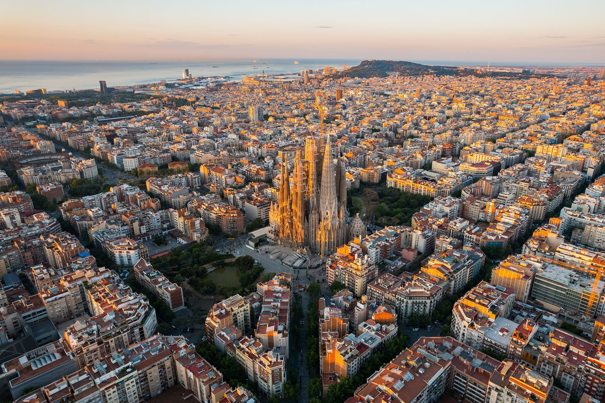
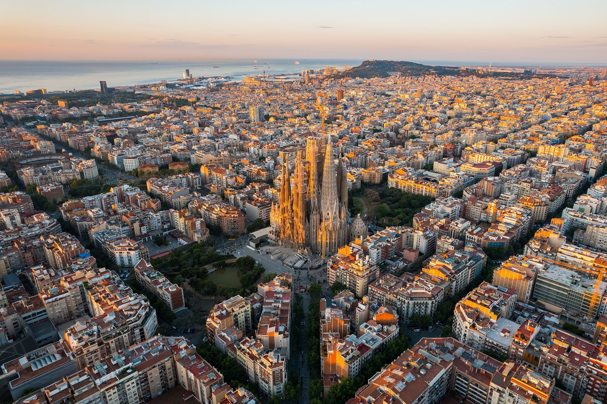

Bienvenue dans notre voyage pédagogique à Barcelone
Présentation du Voyage Pédagogique à Barcelone.
Ce voyage à Barcelone a été minutieusement conçu pour offrir une expérience enrichissante et dynamique, alliant découvertes culturelles, exploration d’entreprises innovantes et activités de groupe. L’objectif est de plonger les participants dans l’histoire, la culture et l’innovation d’une ville européenne emblématique, tout en permettant une approche pratique et immersive dans différents domaines d’activité.
Au programme, des visites incontournables comme la Sagrada Familia et le Parc Güell, des explorations des quartiers historiques de Barcelone, ainsi que des rencontres avec des entreprises locales . Des moments dédiés à la détente, au shopping et à l’intégration des éléments locaux complèteront cette expérience unique.
Grâce à une organisation logistique rigoureuse et des choix de transport, hébergement et activités adaptés, chaque participant pourra pleinement profiter de son séjour, tout en bénéficiant d’un programme parfaitement équilibré entre culture, technologie et loisirs.
 


Cette page d'accueil présente les grandes lignes du voyage. Pour des informations plus détaillées, telles que le programme détaillé jour par jour, le planning de préparation, le budget prévisionnel et l’analyse des risques, nous vous invitons à consulter les pages spécifiques accessibles via le menu de navigation.